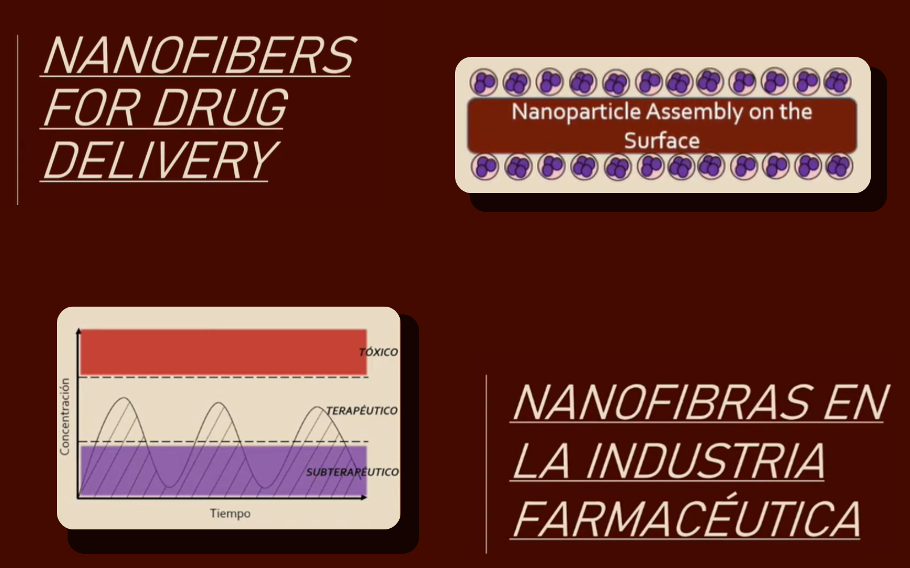
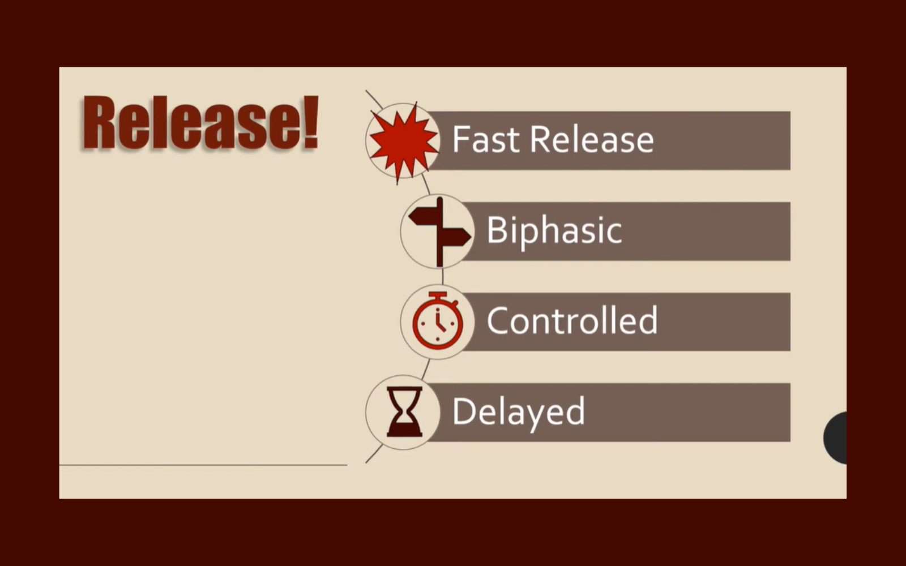
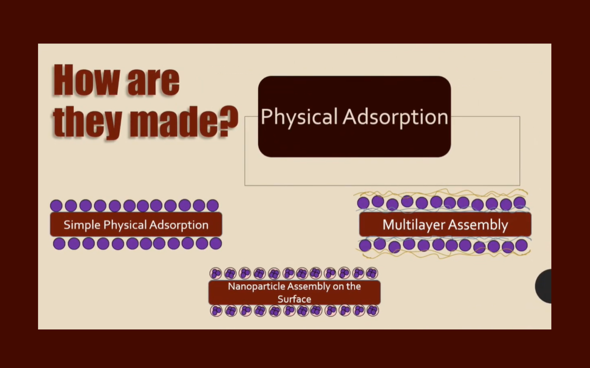
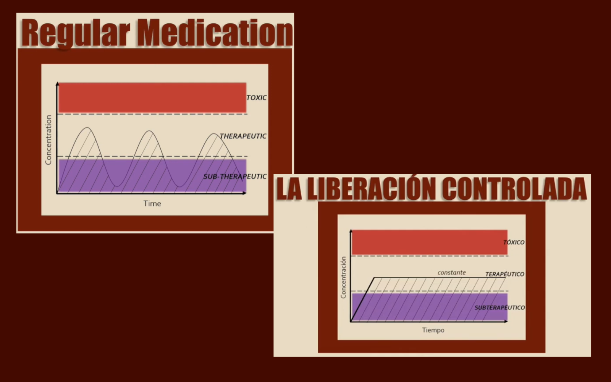
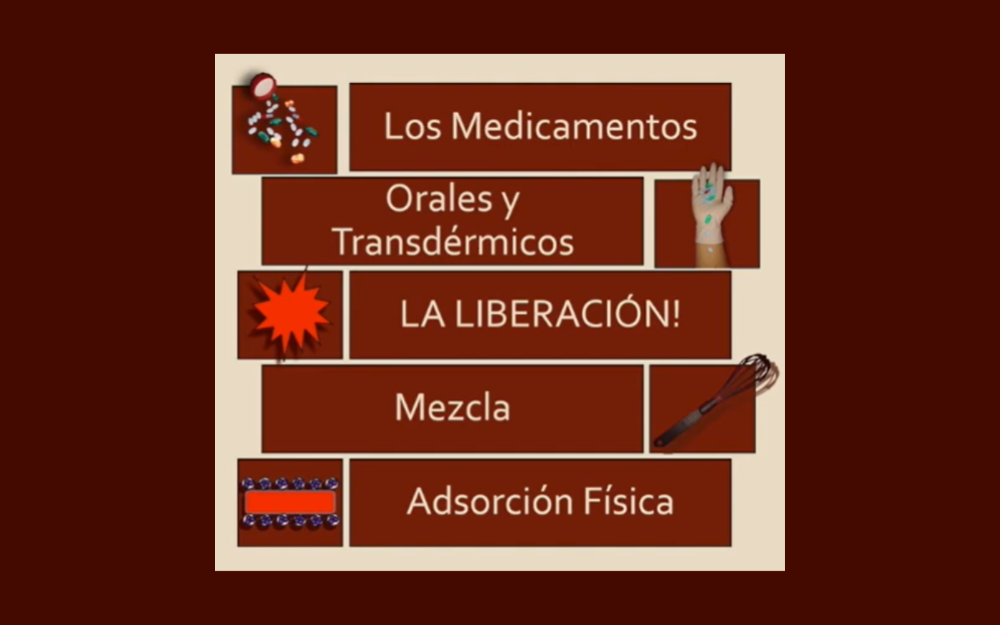

Nanofibers for Drug Delivery Videos (English & Spanish)
Created bilingual (English & Spanish) educational videos explaining how nanofibers improve oral and transdermal drug delivery.





MPPT Energy System Mobile App Details
This project presents an accessible overview of nanofiber-based drug delivery systems, with a focus on oral and transdermal applications. The videos explain how traditional medication delivery methods can be inefficient or uncomfortable and how nanofibers offer a non-invasive alternative. By controlling how and when medication is released into the body, nanofiber technology can improve effectiveness while reducing side effects. All diagrams, charts, and images used in the videos were personally created or captured, ensuring that the visual content is original and tailored to clearly communicate complex biomedical concepts.
The videos explore different drug release mechanisms, including fast, biphasic, controlled, and delayed release, and compares them to traditional medication absorption curves. It also details how nanofibers are manufactured and loaded with drugs using techniques such as blending and physical adsorption, including nanoparticle and layer-by-layer assembly. Special attention is given to how polymer selection impacts biodegradability and absorption within the body.
Being able to control when the fibers dissolve... allows the drug to work more effectively... and it helps the drug to continue to work at the same rate for extended periods of time.
This project demonstrates the potential of nanofibers to revolutionize over-the-counter and long-term medication delivery. By highlighting stability, controlled release, and patient comfort, the videos emphasize why nanofiber-based systems are an active area of research. The bilingual presentation further broadens accessibility and impact, making complex engineering concepts understandable to diverse audiences.
Project information
- Category Research
- Technologies PowerPoint, YouTube, Scientific visualization and diagrams
- Skills Technical communication for non-technical audiences, Biomedical and materials science research, Data visualization and conceptual modeling, Public speaking and content delivery
- Project date June 2020 - July 2020
- English Video YouTube Link
- Vídeo en Español Enlace de YouTube